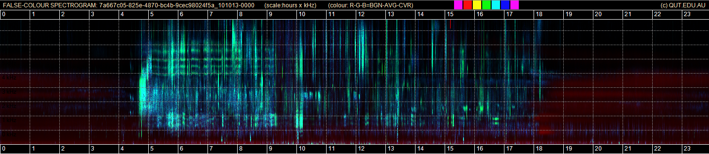

Figure 1 - Mid - The Navigation and Visualisation of Environmental Audio using Zooming Spectrograms
{% include_relative other_figures.html %}
Fig. 1 - Mid. An acoustic day in the life of the Australian bush as revealed in a false-color 24-hour spectrogram.
This image was constructed by combining the spectrograms of three different acoustic indices in RGB colour.
For more detail see: Towsey et al., Visualization of long-duration acoustic recordings of the environment,
presented at the The International Conference on Computational Science (ICCS 2014), Cairns, Australia, 2014.
A 24-hour false-colour spectrogram produced by mapping the indices BGN-POW-CVR to red-green-blue respectively.

Axes: Vertical grid-lines are at one hour intervals, starting and ending on midnight. The horizontal grid-lines are at 1 kHz intervals.
Hover over the descriptions below to highlight sections of the image.
Morning Chorus
Crickets - Orthoptera - four frequency tracks of four species, flat because not temperature sensitive.
Crows - Corvus orru - note that the stacked harmonics are not as clear as in the ACI-ENT-EVN spectrogram.